Nuestro Servicio
1Adopción
La adopción de animales se opone a la crueldad animal y le da a un animal sin hogar un lugar seguro para vivir.
2Mascotas Perdidas
Usted puede publicar avisos de mascotas perdidas.
3Regalar
Usted también puede regalar mascotas que necesitan un nuevo hogar.
Mascotas Encontradas
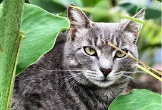
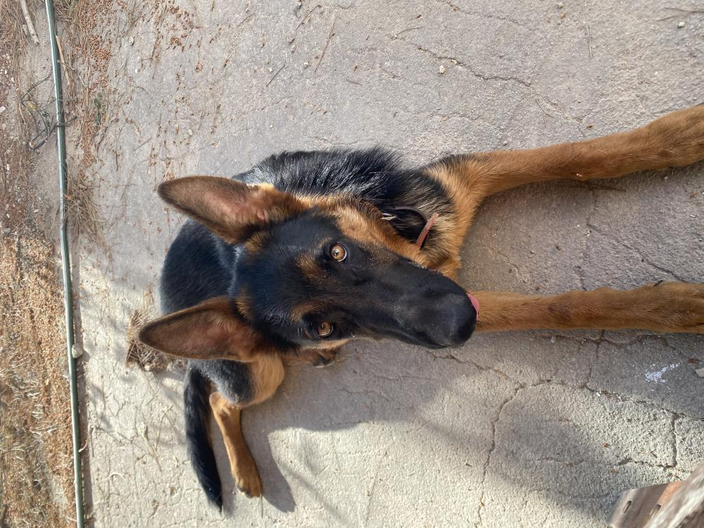
 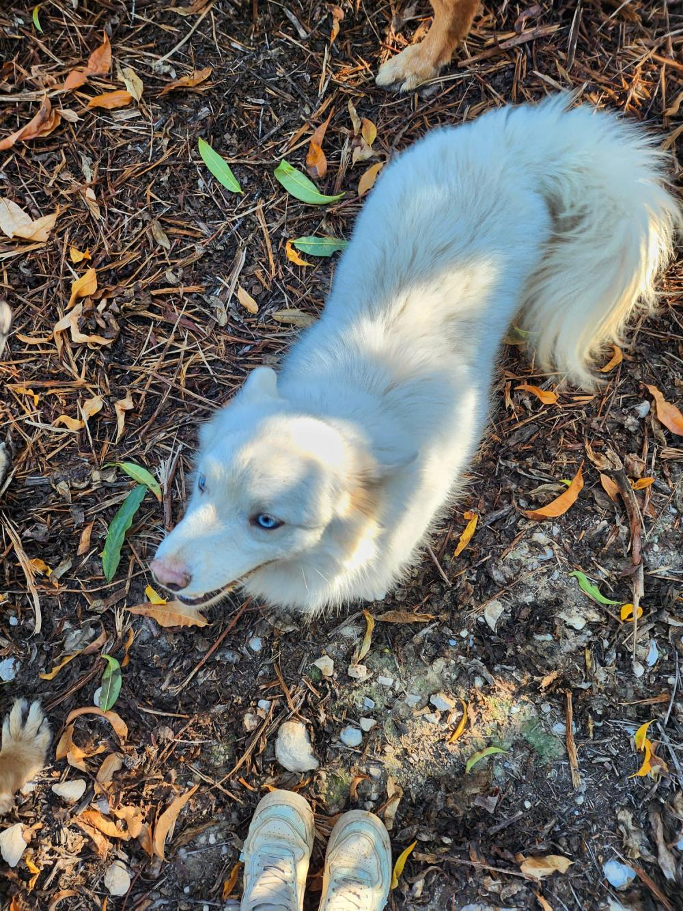
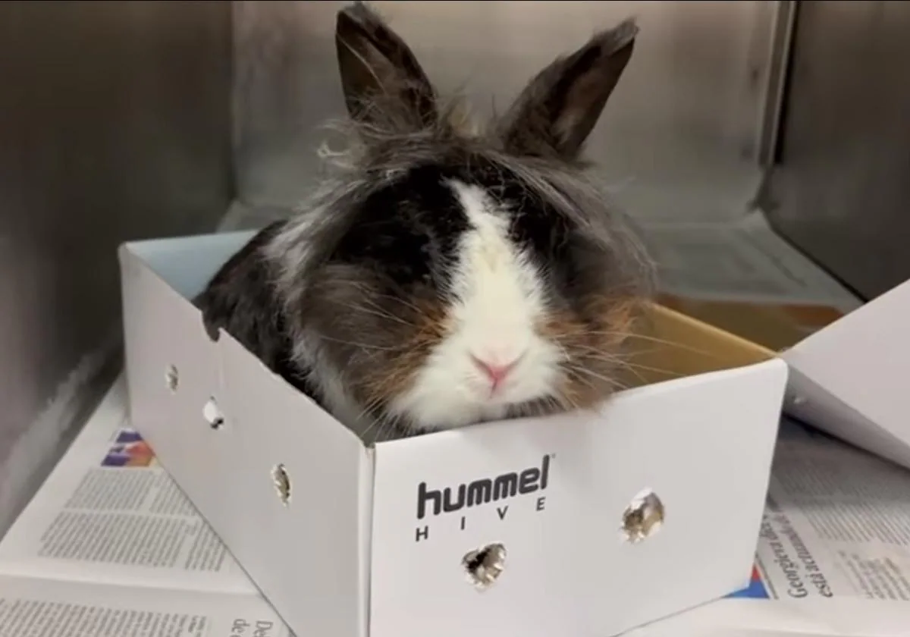
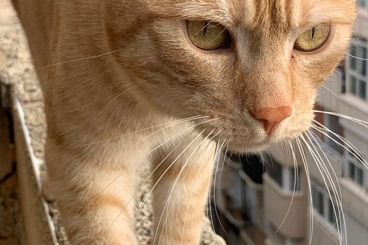
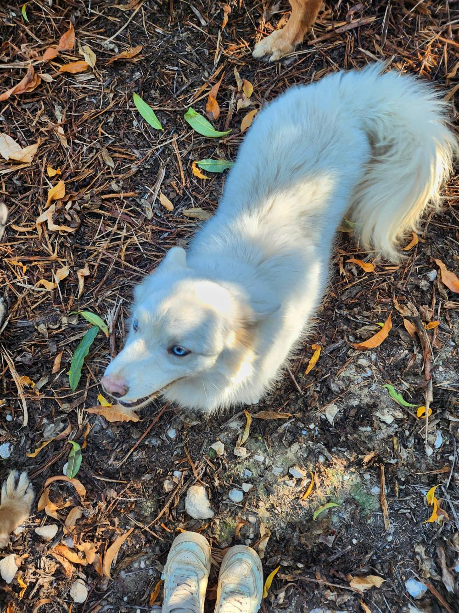
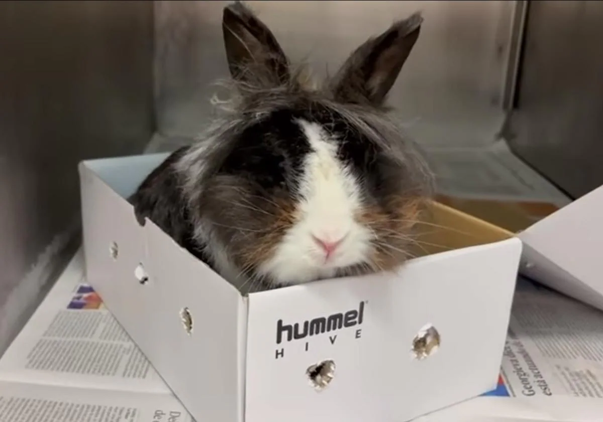
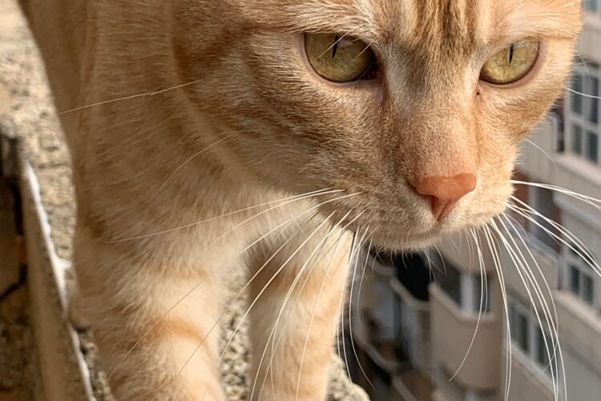
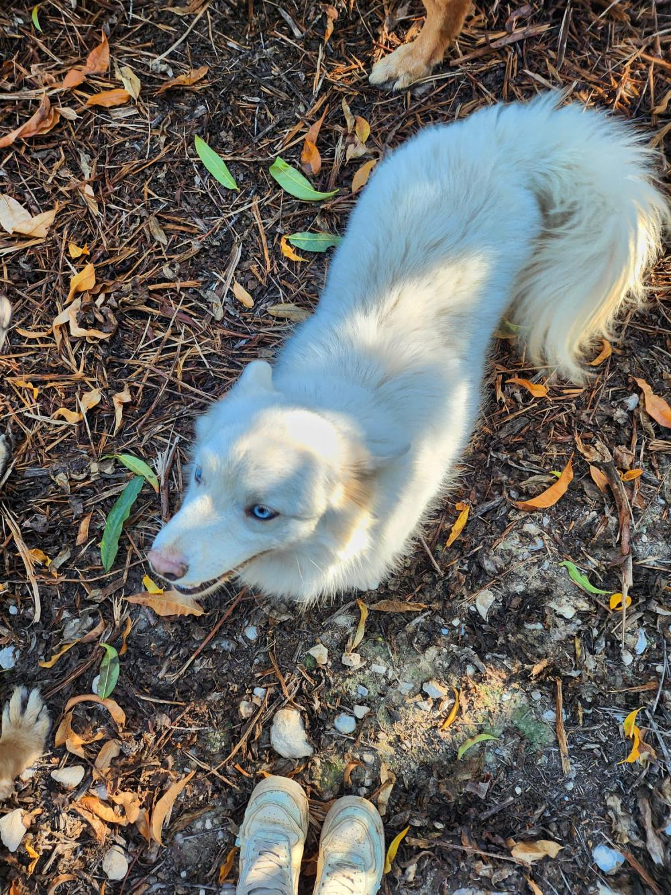
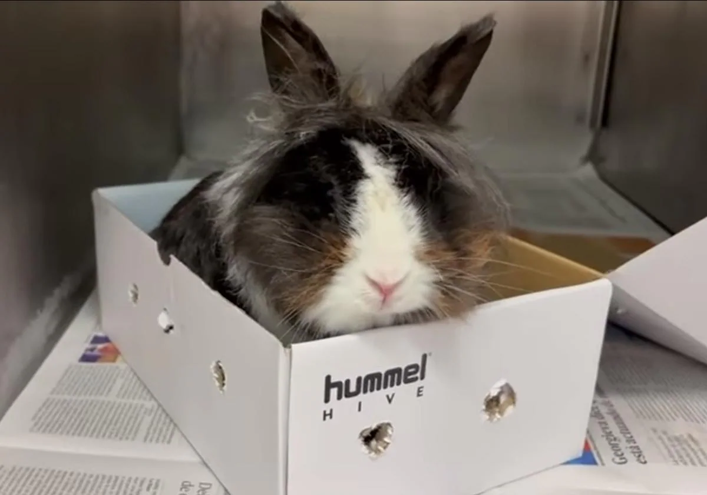
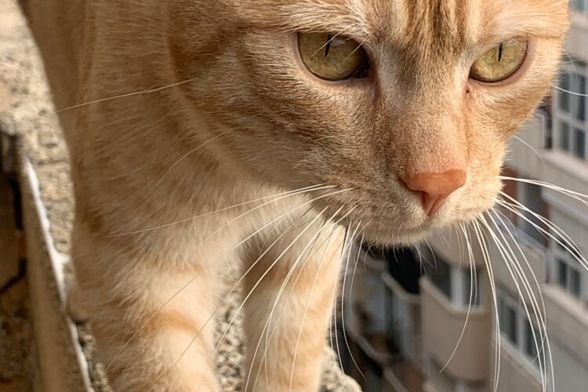